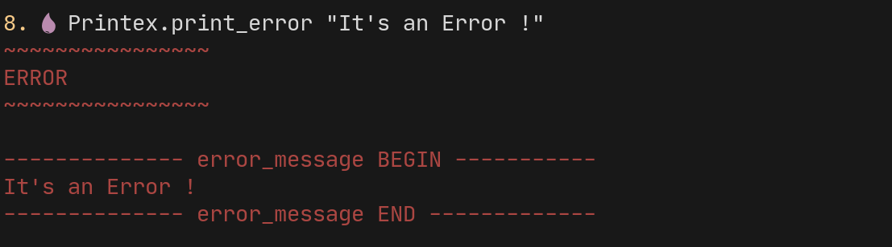
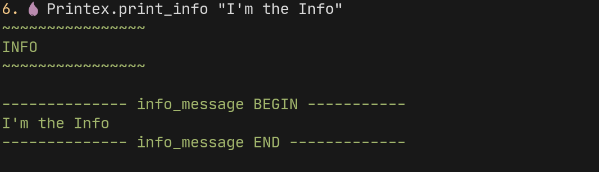
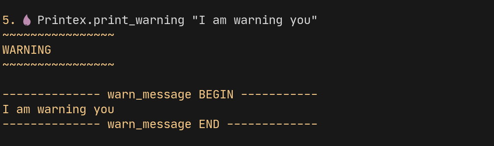

printex v0.1.2 Printex
Documentation for Printex.
Printex is a Color Printer Module,helps you to print the data and strings in color format in console.
Use
This module separates the different console outputs with different colors and including background colors as well. It gives you the direct focus on the console by highlighting text with colors and backgrounds.
You can use in multiple ways like printing the :error message and many formats. This helps you identify message from the regular out put of the console. You can also specify the :bg_color - Background color for the text to lay on. For more examples and screen shots and how to usage check the github
NOTE
Color may look different in different Terminals or Consoles or whatever the :stdout
Summary
Functions
This prints the given text in the format you specified. The string formats are as follows :x_on_y here {x,y} can be any 8 possible colors
Prints the given data with the label provided.If the label is not provided
label data is used. How ever you can say not to use the label by passing :no_label
option
Examples
print("print with out label",:no_label)
print("Normal Print")
print([1,2,3])Usage
You can use this function in three different ways.
- Using the default label format.
print("hello") - With out any label text.
print("hello",:no_label) - Passing label option as string.
print("hello","greeting")here the text greeting is treated as :label 3.1 Passing label option as list.print("hello",label: "greeting")
Prints the given message in the error format in the red color
Prints the given message in the information format in the green color
Prints the given message in the warning format in the yellow color
Prints the only binary to the console with colors specified This function prints the string passed in the color you specified or else it uses the default format for printing i.e regular format IO.puts
Functions
This prints the given text in the format you specified. The string formats are as follows :x_on_y here {x,y} can be any 8 possible colors
- black
- blue
- cyan
- green
- magenta
- red
- white
- yellow
In addition you can also specify respective light combination of colors
Usage
:black_on_white
prints the text in black color with white background.
:red_on_light_green
prints the text in red color with light_green background.
:light_blue_on_light_cyan
prints the text in light_blue color with light_cyan background.
x_on_y format colors
Prints the given data with the label provided.If the label is not provided
label data is used. How ever you can say not to use the label by passing :no_label
option
Examples
print("print with out label",:no_label)
print("Normal Print")
print([1,2,3])Usage
You can use this function in three different ways.
- Using the default label format.
print("hello") - With out any label text.
print("hello",:no_label) - Passing label option as string.
print("hello","greeting")here the text greeting is treated as :label 3.1 Passing label option as list.print("hello",label: "greeting")
print function

Prints the given message in the error format in the red color.
Examples
iex> Printex.print_error "This is error"Printing Error Text

Prints the given message in the information format in the green color.
Examples
iex> Printex.print_info "This is info"Printing Information Text

Prints the given message in the warning format in the yellow color.
Examples
iex> Printex.print_warning "This is warning" Printing Info Text

Prints the only binary to the console with colors specified This function prints the string passed in the color you specified or else it uses the default format for printing i.e regular format IO.puts
Examples
iex> Printex.prints("message")
This prints the message in default color
iex> Printex.prints("message",:red)
This prints the message in red color
iex> Printex.prints {"message",:red}
This prints the message in red color
iex> Printex.prints (%{string: "message",color: :red})
This prints the message in red color
iex> Printex.prints ("message",:red,:white)
This prints the message in red color with white background Text with foreground color

Text with background colors